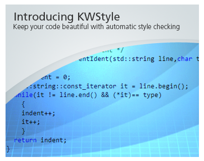

KWStyle is a style checker for source code.
KWStyle is integrated in the software process to ensure that the code written by several users is consistent and can be viewed/printed
as it was written by one person.
KWStyle is primarily checking C/C++ source code but can be easily extended to other languages.
It assumes that the code is syntaxically correct, i.e it compiles on a standard compiler.
Among the fearures provided by KWStyle:
- Several Indentation checking
- Copyright Header correctness
- Maximum line length
- Encapsulation preservation
- Internal variable checking via regular expressions
- New line at the end of file
KWStyle is used by many open-source projects such as ITK, VTK, CMake, IGSTK, etc.

 This website is licensed under a Creative Commons Attribution-NoDerivs 3.0 Unported License. Additional information on this license can be found here. This website is licensed under a Creative Commons Attribution-NoDerivs 3.0 Unported License. Additional information on this license can be found here. |